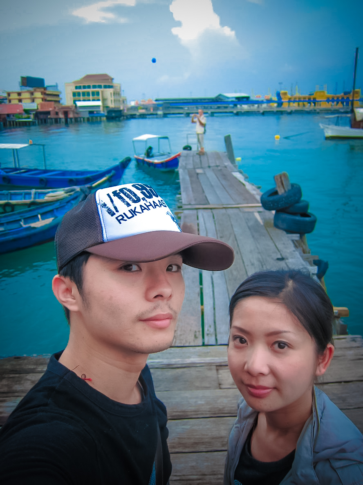

蘭卡威很威
2011 年的春天，我們飛往馬來西亞，展開一段橫跨 蘭卡威、檳城、吉隆坡 的旅程。這是一趟融合自然、人文與城市風光的旅行，也留下許多難忘的片段。
在 蘭卡威，最震撼的莫過於全球最長之一的弧形人行橋——天空之橋。走在上頭，海風迎面而來，腳卻忍不住發軟，還被小妹一路笑到不行 XD。老鷹廣場的巨鷹、纜車觀景台的壯麗視野、七仙井瀑布的清涼飛瀑，以及夜市的繽紛色彩，拼湊成一幅南洋島嶼的動態畫卷。
轉往 檳城，喬治市的姓氏橋靜靜延伸進海面，小印度街區則瀰漫著香料與色彩。老屋、鐘樓與天際雲幕同框，讓人有種時光被凝結的錯覺。這裡的節奏，比吉隆坡慢許多，也多了幾分人情味。
最後來到 吉隆坡，在雙子星塔前拍下戀愛放閃的打卡照，在亞羅街夜市大啖沙嗲與各式小吃。布城的粉紅清真寺如夢似幻，國家皇宮前則忍不住裝模作樣敬禮當侍衛；甚至還近距離感受了 F1 賽車的速度魅力。
這趟旅行，把我們帶進馬來西亞的多元面貌：有海島的悠閒、城市的繁華，也有文化的厚度。每一站，都是驚喜。-
巨鷹展翅，我們也要高飛！
# 馬來西亞·蘭卡威·巨鷹廣場 Dataran Lang
-

登高望遠，美景盡收眼底。
# 馬來西亞·蘭卡威·纜車觀景台 SkyCab
-
城市地標打卡，戀愛放閃。
# 馬來西亞·吉隆坡·雙子塔 KLCC
-
粉紅圓頂，夢幻得像棉花糖。
# 馬來西亞·布城·粉紅清真寺 Putra Mosque
-
# 馬來西亞·布城·粉紅清真寺 外廣場
-
敬個禮，放個...
# 馬來西亞·吉隆坡·國家皇宮 Istana Negara
-
F1賽車近距離，速度感爆表。
# 馬來西亞·吉隆坡·Suria KLCC·Petronas 展
-

夜色霓虹亮，逛街腳步停不下。
# 馬來西亞·吉隆坡·武吉免登 Bukit Bintang
-
迷你雙塔旁合影。
# 馬來西亞·吉隆坡·Petrosains 科學中心
-
拼貼牆前小憩，節奏慢下來。
# 馬來西亞·吉隆坡·Metalesce 陳列館
-
抱緊巨型錫杯，童心百分百。
# 馬來西亞·吉隆坡·皇家雪蘭莪 Royal Selangor
-
張臂迎風，振翅高飛~前往下一站自由。
# 馬來西亞·蘭卡威·地標步道
-
赤瓦商圈萬里晴，笑容更亮。
# 馬來西亞·蘭卡威·東方村 Oriental Village
-
上纜車，把山海收入眼底。
# 馬來西亞·蘭卡威·SkyCab 纜車站
-

鋼索牽住天空，我們牽著彼此。
# 馬來西亞·蘭卡威·天空之橋 Sky Bridge
-
飛瀑如練，清涼貼臉。
# 馬來西亞·蘭卡威·七仙井瀑布 Telaga Tujuh
-
岩石當座椅，溪聲作配樂。
# 馬來西亞·蘭卡威·七仙井瀑布 Telaga Tujuh
-
南洋水果一整桌，買了一串蕉~甜到心裡。
# 馬來西亞·蘭卡威·市集 Pasar Malam
- 
木棧碼頭吱呀響，海風說午安。
# 馬來西亞·蘭卡威·瓜鎮 Jetty Point
-
木板小徑穿村而過，海上人家靜靜說著故事。
# 馬來西亞·檳城·喬治市·姓氏橋 Clan Jetties
-
色彩與香氣滿街飛舞，跟著人潮慢慢逛。
# 馬來西亞·檳城·喬治市·小印度 Little India
-
老屋、鐘樓與雲幕同框，時光被輕輕定格。
# 馬來西亞·檳城·喬治市·街景
-
替沙嗲扇火加溫，炭香立刻把食慾喚醒。
# 馬來西亞·吉隆坡·亞羅街夜市 Jalan Alor